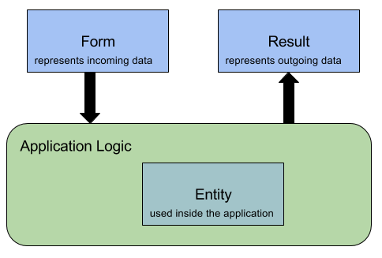
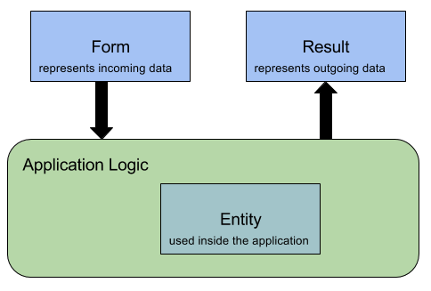

What is BeanMapper?
The core definition of the task of BeanMapper is for converting from one Java class to a dissimilar Java class with similar names based on the Bean convention.
However BeanMapper does have a lot more functionality than only converting Java classes.
You can read about this in the rest of this documentation.
Using Spring?
Take a look at BeanMapper-Spring for combining the power of BeanMapper together with Spring.
Take a look at the BeanMapper-Petshop for samples of using BeanMapper. It shows you how to use the BeanMapper in a REST API in Java. It also show examples of using BeanMapper in combination with BeanMapper-Spring
You can read about this in the rest of this documentation.
Using Spring?
Take a look at BeanMapper-Spring for combining the power of BeanMapper together with Spring.
Take a look at the BeanMapper-Petshop for samples of using BeanMapper. It shows you how to use the BeanMapper in a REST API in Java. It also show examples of using BeanMapper in combination with BeanMapper-Spring
Why using BeanMapper?
When building a REST API you work quite often with three kinds of objects.

Why using forms?
Wouldn't it be great if mapping from Form to Entity and from Entity to Result can be done automatically?
Let us suppose we have a tool that is able to map similar fields from dissimilar classes.
In this case, it would be just a matter of passing both instances and delegating the task of mapping from source to target to this tool.
This is why you should BeanMapper; BeanMapper just does the above described problem in a very easy way.
Want to use BeanMapper? In the next section you can read about using BeanMapper.
For a more detailed use case of why using BeanMapper, read this blog 'The Case for BeanMapper'.
- The Entity; The entity represents the data inside the application.
- The Result; The result represents the entity to the outside of the world. This could be a partially entity.
- The Form; When creating/updating a entity you often want to use a form object to pass the given data to.

Why using forms?
- For security reasons you want to accept only a limited number of fields as input.
- The form fields are simplified to support frontend processing.
- You want to simplify the result for frontend processing.
- You want to expose a limited number of fields for security reasons.
Wouldn't it be great if mapping from Form to Entity and from Entity to Result can be done automatically?
Let us suppose we have a tool that is able to map similar fields from dissimilar classes.
In this case, it would be just a matter of passing both instances and delegating the task of mapping from source to target to this tool.
This is why you should BeanMapper; BeanMapper just does the above described problem in a very easy way.
Want to use BeanMapper? In the next section you can read about using BeanMapper.
For a more detailed use case of why using BeanMapper, read this blog 'The Case for BeanMapper'.
How to Use
You can convert your objects on four different ways.
Lets assume that we have two classes. SourceClass is your entity that is used inside the application. TargetClass is the class that you would like to expose to the outside.
Convert to a new class
Convert to a existing instance
Convert to a collection
Convert to a dynamic generated class
- convert to a new class
- convert to a existing instance
- convert to a collection
- convert to a dynamic generated class
Lets assume that we have two classes. SourceClass is your entity that is used inside the application. TargetClass is the class that you would like to expose to the outside.
public class Source {
public Long id;
public String name;
public Integer age;
public Source(Long id, String name, Integer age) {
this.id = id;
this.name = name;
this.age = age;
}
}
public class Target {
public String name;
public Integer age;
}
Convert to a new class
Source source = new Source(1L, "Henk", 42);
Target target = new BeanMapperBuilder().build()
.map(source, Target.class);
Convert to a existing instance
Source source = new Source(1L, "Henk", 42);
Target existingTarget = new Target();
existingTarget.name = "piet";
Target mergedTarget = new BeanMapperBuilder().build()
.map(source, existingTarget);
Convert to a collection
List<Source> sources = new ArrayList<>();
sources.add(new Source(1L, "Henk", 42));
sources.add(new Source(2L, "Piet", 50));
sources.add(new Source(3L, "Kees", 3));
Collection<Target> targets = new BeanMapperBuilder().build()
.map(sources, Target.class, ArrayList.class);
Convert to a dynamic generated class
Source source = new Source(1L, "Henk", 42);
Object target = new BeanMapperBuilder().build()
.map(source, Target.class, new MappableFields("name"));
// Target now a class only containing a name
Download
In order to use Beanmapper in your project, simply add the following Maven dependency.

You can find the javadoc for BeanMapper here.
You can also download the latest jar and include this in your project.
<dependency>
<groupId>io.beanmapper</groupId>
<artifactId>beanmapper</artifactId>
<version>{{version}}</version>
</dependency>
Version is the latest version of BeanMapper
You can find the javadoc for BeanMapper here.
You can also download the latest jar and include this in your project.